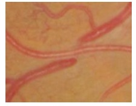

Em relação à Hipertensão Arterial Sistêmica, é correto afirmar:
No diagnóstico de Hipertensão Arterial podemos encontrar Hipertensão mascarada que é caracterizada por:
Segundo as diretrizes da sociedade Brasileira de Cardiologia de 2020, quais são os níveis pressóricos (em mmHg) que classificam a hipertensão arterial como estágio 1?
A hipertensão arterial (HA) é uma condição frequentemente assintomática e costuma evoluir com alterações estruturais e (ou) funcionais em órgãos-alvo, como coração, cérebro, rins e vasos. Acerca desse assunto, assinale a alternativa correta.
A MAPA (monitorização ambulatorial da pressão arterial) e MRPA (monitorização residencial) são ferramentas importantes para a adequada avaliação da pressão arterial fora do consultório, com várias indicações comuns para esses métodos. Assinale a alternativa que apresenta uma indicação específica para a MAPA.
Considerando a classificação da pressão arterial (PA) de acordo com a medição no consultório a partir de 18 anos de idade, proposta pela mais recente diretriz brasileira de hipertensão, considera-se como PA ótima aquela cujos valores são:
Entre as causas de óbito na população em geral, as doenças cardiovasculares são muito comuns. E esta mortalidade tem importante influência do comportamento da pressão arterial. O método mais comum de aferição de pressão arterial é o uso de es gmomanômetro, seja por técnica auscultatória, seja técnica oscilométrica, em ambiente de consulta médica. Mas este método pode não re etir o comportamento da pressão arterial em ambiente ambulatorial, fora do consultório médico. Com respeito ao diagnóstico da pressão arterial, analise as assertivas abaixo. I – Chama-se hipertensão do avental branco quando o paciente está com sua pressão arterial elevada na medida em consultório, mas com pressão arterial normal por um método extra consultório (como a monitorização ambulatorial de pressão arterial). Tem risco de complicações semelhantes ao dos não hipertensos. II – Chama-se hipertensão mascarada quando o paciente está com sua pressão arterial normal na medida em consultório, mas com pressão arterial elevada por um método extra consultório (como a monitorização ambulatorial de pressão arterial). Tem risco de complicações semelhantes ao risco dos não hipertensos. III – O real não hipertenso é o paciente que tem pressão arterial normal na medida em consultório, com pressão arterial igualmente normal no ambiente extra consultório. Tem o menor risco de complicações decorrentes do comportamento da pressão arterial. Selecione a opção correta.
Mulher de 45 anos encontra-se muito ansiosa ao saber que sua pressão arterial estava 158 x 96mmHg após exame de rotina. Refere ser assintomática, apresenta exames laboratoriais normais, com sobrepeso e sedentarismo. Diante desse quadro, o diagnóstico e a conduta mais adequados, respectivamente, são:
Considere o caso clínico abaixo e os personagens nele ilustrados, para responder. Após ser aprovado e ingressar no Programa de Residência Médica em Medicina de Família e Comunidade, você é direcionado para uma Unidade de Atenção Primária à Saúde (UAPS) para ser recebido pelo médico preceptor da Unidade. Em sua primeira participação de reunião de equipe, uma das agentes comunitárias de saúde (ACS) da equipe do médico preceptor traz o relato de uma gestante de sua microárea que não procurou a Unidade de Saúde para começar o pré-natal. A gestante era Vanessa e ela era antiga conhecida da equipe, porque seu nado pai, Seu Odair, fora uma liderança comunitária e era muito querido por todos. Vanessa tinha a primeira consulta de pré-natal agendada para o primeiro horário depois da reunião de equipe. Dr. Marcos Júlio, seu preceptor, relata que Vanessa nunca teve boa relação com os pais e saiu de casa cedo, passando a morar, aos 14 anos, na casa de Ubiratan, seu primeiro parceiro. Após alguns anos morando juntos, Vanessa engravidou e chegou a ser acompanhada pela UAPS no pré-natal, mas teve perda gravídica com aproximadamente 12 semanas de seguimento. Durante esse acompanhamento pré-natal, a equipe cou ciente de que Vanessa vivia em contexto de violência doméstica, mas continuava vivendo com Ubiratan, porque não aceitava voltar para a casa dos pais. Por volta de seus 24 anos, Vanessa teve episódio de hemiplegia desproporcional em dimídio esquerdo, desvio de rima labial e disartria, enquanto trabalhava em uma casa como diarista. Foi levada à urgência e hospitalizada. Durante hospitalização, confirmou-se um infarto cerebral. A família de Vanessa possui histórico de AVCs em idades precoces: Vanusa apresentou episódio de AVC durante uma de suas gestações e dona Benzarina teria apresentado o primeiro AVC antes da menopausa. Segundo a Assistente Social do hospital em que Vanessa cou internada por quase dois meses, Ubiratan nunca teria realizado uma visita, mas Edberto, um ex-namorado, foi companhia assídua. Após a alta hospitalar, Vanessa descobriu que Ubiratan estava vivendo com outra mulher e se mudou para casa de Edberto, que a acolheu, a despeito da não-aceitação do pai de Edberto, Seu Eduardo. Depois de seis anos morando juntos, Vanessa engravidou novamente, mas não procurou a UAPS. A ACS fazia visitas domiciliares na mesma rua em que Edberto e Vanessa moram, quando viu Vanessa, já com barriga gravídica, varrendo a calçada. Após breve conversa, a ACS agenda atendimento para Vanessa na UAPS. Durante o exame físico de Edberto, você aferiu PA = 162x114mmHg, IMC = 38kg/m², circunferência abdominal = 110cm e glicemia capilar em jejum = 158mg/dl. A ausculta cardíaca evidenciou frequência cardíaca de repouso de 120bpm, ictus deslocado para o 6º espaço intercostal e com caráter propulsivo. Edberto cou surpreso com o valor de sua pressão arterial, referindo que, apesar de não lembrar quando fora a última vez que teve a pressão arterial aferida, nunca havia chegado a esse nível pressórico. Ele, então, pergunta qual significado clínico desse valor. Assinale a alternativa com a conduta correta.
Revisar: possível letra faltando em enunciado
Segundo as diretrizes de Hipertensão Arterial da SBC de 2020, assinale a alternativa INCORRETA sobre Hipertensão Arterial Sistêmica.
Homem, 64 anos de idade, em tratamento para hipertensão arterial sistêmica e diabetes tipo 2, comparece à primeira consulta do ambulatório de clínica médica de um hospital do Sistema Único de Saúde - SUS. Relata que veio a este ambulatório porque na unidade básica de saúde perto de sua casa “não tem médico”. Relata fazer uso de losartana 50mg 2 vezes/dia, hidroclorotiazida 25 mg/dia, metformina 850mg 1vez ao dia, glicazida 90 mg/dia. Trouxe alguns exames realizados em internação prévia, por pneumonia bacteriana (há 2 meses): HbA1c: 12.5%; Creatinina: 1,6 mg/dL; (Taxa de Filtração Glomerular - TFG: 45 mL/min/1,73m2 ); Ureia: 53 mg/dL. Ao exame físico: bom estado geral, frequência respiratória = 20 incursões/minuto; Frequência cardíaca = 78 batimentos/minuto; pressão arterial = 170 x 80 mmHg; saturação de oxigênio = 97% (em ar ambiente). Restante do exame sem alterações significativas, a não ser presença de dermatite ocre, sem edemas ou lesões em membros inferiores (MMII). Quais exames de rastreamento para complicações das comorbidades devem ser solicitados?
MAB, 55 anos, sexo feminino, viúva, G1 P0A 1, vai à unidade básica de saúde, pedindo uma consulta médica, pois nos últimos dias está sentindo um mal-estar e não dorme direito. Negou dor em tórax, alterações visuais e demais queixas. Ao exame foi constatado PA 190 x11 O mmHg. Diante do exposto, marque a resposta correta:
A hipertensão arterial atinge grande parte dos brasileiros e contribui para a morbimortalidade cardiovascular. Em 2016, a Sociedade Brasileira de Cardiologia publicou a Sétima Diretriz Brasileira de Hipertensão Arterial. De acordo com essa Diretriz, julgue o item. Pacientes que apresentem pressão de 120 x 80 mmHg no consultório médico e de 150 x 100 mmHg na monitorização ambulatorial de pressão arterial (MAPA) de 24 horas são definidos como portadores de hipertensão do avental branco.
A hipertensão arterial atinge grande parte dos brasileiros e contribui para a morbimortalidade cardiovascular. Em 2016, a Sociedade Brasileira de Cardiologia publicou a Sétima Diretriz Brasileira de Hipertensão Arterial. De acordo com essa Diretriz, julgue o item. A hipotensão ortostática é definida como uma redução > 20 mmHg da pressão arterial sistólica ou > 10 mmHg da pressão arterial diastólica em pacientes que estejam, há três minutos, na posição ortostática.
A hipertensão arterial atinge grande parte dos brasileiros e contribui para a morbimortalidade cardiovascular. Em 2016, a Sociedade Brasileira de Cardiologia publicou a Sétima Diretriz Brasileira de Hipertensão Arterial. De acordo com essa Diretriz, julgue o item. Na medição de pressão arterial no consultório médico, não é mais recomendada a estimação da pressão sistólica pela palpação da artéria radial quando for utilizado o método auscultatório.
Mulher, 60 anos de idade, é acompanhada na Unidade de Saúde da Família (USF) por arterial sistêmica. Na primeira visita à USF, há cerca de 6 meses, a PA estava em 182x100mmHg. Atualmente, assintomática. Nega outras comorbidades. Em uso regular de metformina 850mg duas vezes ao dia, losartana 50mg de 12/12h e anlodipina 10mg ao dia, há cerca de 6 meses. Ao exame físico, apresenta-se em bom estado geral, com FC: 70bpm, PA: 166x96mmHg em ambos os membros superiores e glicemia capilar de 110mg/dL. Pulsos palpáveis e simétricos. Exame segmentar sem alterações. Traz monitorização residencial da pressão arterial, com PAS entre 140 e 172mmHg e PAD entre 90 e 96mmHg. Determine as metas de pressão arterial sistólica e diastólica para essa paciente, segundo a Sociedade Brasileira de Cardiologia e a Sociedade Brasileira de Diabetes.
Mulher, 60 anos de idade, é acompanhada na Unidade de Saúde da Família (USF) por arterial sistêmica. Na primeira visita à USF, há cerca de 6 meses, a PA estava em 182x100mmHg. Atualmente, assintomática. Nega outras comorbidades. Em uso regular de metformina 850mg duas vezes ao dia, losartana 50mg de 12/12h e anlodipina 10mg ao dia, há cerca de 6 meses. Ao exame físico, apresenta-se em bom estado geral, com FC: 70bpm, PA: 166x96mmHg em ambos os membros superiores e glicemia capilar de 110mg/dL. Pulsos palpáveis e simétricos. Exame segmentar sem alterações. Traz monitorização residencial da pressão arterial, com PAS entre 140 e 172mmHg e PAD entre 90 e 96mmHg. Indique a classificação para a pressão dessa paciente na primeira visita à Unidade de Saúde da Família. (
Um paciente de 28 anos de idade, branco, com IMC de 24 kg/m², sem antecedentes prévios, procurou atendimento em UBS, pois, em um exame admissional, fora constatada uma PA de 170 x 100 mmHg. Negou história familiar de hipertensão arterial e doenças prévias. Ao exame físico na UBS, tinha PA de 200 x 100 mmHg e estava assintomático, sem outras alterações. Assinale a alternativa que apresenta a abordagem inicial correta para o paciente.
Determinado paciente de 58 anos de idade, tabagista, com histórico de IAM há cinco anos e DM2, em uso de metformina, comparece à consulta com os seguintes exames laboratoriais: glicemia = 136 mg/dL; colesterol HDL = 32 mg/dL; colesterol LDL = 192,3 mg/dL; e creatinina sérica = 1,32 mg/dL. Apresenta medida de PA = 165 mmHg x 102 mmHg, FC = 80 bpm, SatO2 = 92% com níveis tensionais confirmados em duas consultas com mais de quatro semanas entre elas. Considerando esse caso clínico e os conhecimentos médicos correlatos, julgue os itens a seguir. Trata-se de um caso de HAS estágio 2.
Assinale a assertiva correta sobre aferição da pressão arterial em esfigmomanômetro aneroide em adulto.
Você é médico(a) de família e comunidade em uma Unidade de Saúde da Família e seu primeiro paciente do dia é um homem. Ele vem sem queixas para uma consulta de rotina agendada previamente. Ele tem 56 anos, é hipertenso (de longa data) controlado e dislipidêmico. Faz uso de enalapril 20 mg/dia, ácido acetilsalicílico (AAS) 100 mg/dia e sinvastatina 20 mg/dia. Nunca fumou, nem bebeu. Apresenta exame físico normal. PA: 128 x 86 mmHg. Você checa o prontuário e encontra os seguintes exames complementares: glicose 94 mg/dL, colesterol total 185 mg/dL, colesterol HDL 61 mg/dL, triglicérides 132 mg/dL, creatinina 1,2 mg/dL, potássio 4,3 mEq/L. Dentre as opções abaixo, assinale aquela que cita exames obrigatórios e que estão faltando no prontuário do paciente citado.
Paciente do sexo feminino, branca, 46 anos de idade, chega a seu consultório preocupada com o diagnóstico de hipertensão recebido há 1 mês. Ela o questiona quanto à probabilidade de desenvolver as complicações da hipertensão, inclusive insu ciência renal e AVE. Ela nega outra história médica pregressa além de hipertensão e não apresenta sintomas que sugeriram causas secundárias. Atualmente, utiliza 25 mg/dia de hidroclorotiazida. Fuma meio maço de cigarros por dia e ingere bebida alcoólica não mais que 1 vez por semana. A história familiar por parte de pai e mãe é significativa para hipertensão; a sua mãe morreu vítima de um acidente cerebrovascular e seu pai ainda é vivo, porém apresenta doença arterial e coronariana e faz hemodiálise. Sua PA é 138/90 mmHg de pressão arterial e seu IMC é 23. Ela não apresenta exsudatos retinianos nem outros sinais de retinopatia hipertensiva. Seu ictus cardíaco máximo não é deslocado, mas é sustentado. O ritmo e a frequência são regulares e sem galopes. Apresenta bom pulso periférico. O eletrocardiograma revela eixo de - 30 graus com critérios de voltagem limitrofes para hipertro a ventricular esquerda. A creatinina é de 1,0 mg/dL. Qual dos itens a seguir da história e do exame físico constitui um fator de risco para o prognóstico ruim em um paciente com hipertensão?
Na hipertensão do jaleco branco o procedimento a ser feito para confirmar o diagnóstico é
Estratif icação de risco cardiovascular Considere uma paciente de 54 anos de idade, diabética (HbA1c = 8,2%), cardiopata isquêmica com infarto agudo do miocárdio prévio e insu ciência cardíaca com fração de ejeção reduzida. Encontra-se em tratamento para diabetes com metformina 850 mg três vezes ao dia e glibenclamida 5 mg pela manhã. No exame físico, chama a atenção a presença de manchas hiperpigmentadas/escurecidas em áreas de dobras. A respeito desse caso clínico e com base nos conhecimentos médicos correlatados, bem como nas últimas diretrizes mundiais relacionadas ao tratamento da diabetes, publicadas em 2019, julgue o item a seguir. Por definição, a paciente tem alto risco cardiovascular.
O risco cardiovascular global deve ser avaliado em cada indivíduo hipertenso, pois auxilia na decisão terapêutica e permite uma análise prognóstica. São fatores de risco cardiovascular na avaliação do risco adicional no hipertenso:
Considerando as aplicações da monitorização residencial da pressão arterial, não podemos apenas indicar como inadequado que:
Homem, 45 anos, diabético, encontra-se assintomático, sem alterações no exame físico e com PA de 140 x 92 mmHg. Exames laboratoriais: creatinina = 2,0 mg/dl (taxa de ltração glomerular estimada 40 ml/min), ureia = 80 mg/dl, Na = 139 mmol/L, K = 4,8 mmol/L, glicemia = 190 mg/dl, hemoglobina glicada = 8,4%, relação albumina/creatinina urinária = 1000 mg/g (VR < 30 mg/g). Foi iniciado captopril 25 mg a cada 8 horas. Qual é o exame indispensável a ser solicitado para o próximo retorno?
Assinale a opção incorreta.
Desaparecimento dos sons soprosos e surgimento de sons mais nítidos e intensos. Tem por base teórica que com a diminuição da pressão da bolsa a artéria permanece aberta na sístole mas fechada na telediástole. O texto acima descreve os sons de Korotkoff na fase
A prevenção de alguns agravos à saúde requer o rastreamento de determinadas doenças na população, seguindo critérios específicos. De acordo com o Ministério da Saúde, uma das morbidades a ser rastreada e seu respectivo critério é
Identi que as orientações ou condutas corretas que devem ser observadas nas ações para prevenção e controle da Hipertensão Arterial Sistêmica na ABS.
No Brasil, os desa os do controle e prevenção da Hipertensão Arterial Sistêmica (HAS) e suas complicações são sobretudo, das equipes de Atenção Básica (AB). Nesse contexto, quais exames fazem parte da rotina complementar mínima para pessoa com HAS?
Em relação à estrati cação de risco de pacientes hipertensos, de acordo com a Linha Guia de Hipertensão Arterial/SESA- PR de 2018, é correto afirmar:
Sobre hipertensão arterial sistêmica, é CORRETO afirmar:
A avaliação inicial de um paciente hipertenso sem comorbidades inclui vários exames, EXCETO:
Um senhor de 74 anos, sem história de doenças prévias ou uso de medicações, fumante de cerca de 5 cigarros por dia, apresentou em consulta prévia registro de 2 aferições de PA com média de 136 x 86 mmHg. Trouxe ECG que apresenta padrão strain e evidencia derivação aVL com onda R de 13 mm e derivação V3 com onda S de 20 mm associado a componente negativo de onda P em derivação V1, de 2 mm. Ao realizar fundoscopia direta, observa-se o achado da foto abaixo. O médico insu a o cu até 160 mmHg, deixando de perceber pulso radial entre 130 e 140 mmHg e não consegue palpar artéria radial em 160 mmHg. Após isso, faz 2 medidas de PA espaçadas com média de 136 x 82 mmHg. IMC = 29 kg/m². Restante do exame físico sem achados relevantes. LEGENDA: PA: Pressão Arterial; ECG: Eletrocardiograma; IMC: Índice de Massa Corpórea. O médico deve concluir tratar-se de qual condição?

A MAPA pode dar informações clínicas valiosas em pacientes idosos, como nos casos de suspeita de hipotensão arterial ortostática, pós-prandial, medicamentosa e situacional, bem como na avaliação de disautonomia e síncopes. Indique a CORRETA.
A hipertensão matinal atraiu atenção por causa da estreita relação com risco cardiovascular como condições caracterizadas por valores elevados de PA, podem causar eventos em idosos e, por meio da MAPA, é possível identi cá- los e definir a melhor forma de tratamento. Está CORRETO que, em idosos, verificou-se que:
No idoso, sobretudo após os 70 anos, hipertensão arterial sistólica isolada é uma condição clínica prevalente. Que alteração do sistema cardiovascular associada ao envelhecimento, dentre as abaixo, não contribui para a patogênese dessa condição?
Quanto a HAS podemos afirmar: - EXCETO:
Sobre a técnica correta de aferição da pressão arterial é correto afirmar:
Dona Maria tem 72 anos e veio para consulta no ambulatório de Nefrologia por apresentar hipertensão arterial (HA) resistente, segundo a guia de encaminhamento que ela trazia da UBS. Assinale a alternativa CORRETA em relação aos aspectos da medida da pressão arterial (PA) de Dona Maria:
Monitorização ambulatorial da pressão arterial MAPA Homem, 40 anos, assintomático, procura atendimento médico devido à hipertensão arterial sistêmica. Em uso de Enalapril 10 mg de 12/12h. Exame físico: FC = 80 bpm, pressão arterial aferida no consultório = 148 x 90 mmHg. Submetido à monitorização ambulatorial da pressão arterial : Média das medidas da pressão arterial nas 24h = 134 x 82 mmHg; na vigilia = 136 x 86 mmHg. Qual é o diagnóstico?
É considerada hipertensão arterial sistêmica estágio 1:
Em relação à hipertensão arterial sistêmica, pode-se afirmar:
Segundo a 7 Diretriz Brasileira de Hipertensão Arterial 2016, fazem parte dos exames básicos da rotina de hipertensão, exceto:
Em relação ao correto diagnóstico de Hipertensão Arterial Sistêmica (HAS), é correto afirmar que:
A respeito da hipertensão arterial sistêmica (HAS), considerada o principal fator de risco para ocorrência de acidente vascular cerebral (AVC) e de infarto agudo do miocardio (IAM), julgue o item a seguir. A avaliação do paciente hipertenso deverá incluir a realização de exame físico e de exames laboratoriais, entre eles o exame de urina para avaliação de proteinúria.
Segundo a VII Diretriz Brasileira de Hipertensão Arterial - HAS (2016), a classificação da HAS em medição casual ou no consultório em um paciente acima de 18 anos de idade com níveis tensionais de 140 X 95 mmHg, estaria classificado como:
Davi tem 35 anos, é branco, solteiro, vive com os pais hipertensos e veio à consulta para fazer “exames de rotina”. Nega doenças prévias e não apresenta queixas no momento. A pressão arterial está em 154 x 96 mmHg. Podemos orientá-lo:
Classif icação da pressão arterial A Hipertensão Arterial Sistêmica (HAS) consiste em entidade clinica multifatorial, em que há presença de níveis tensionais elevados, alterações metabólicas e hormonais e fenômenos tróficos. Sobre a HAS, analise as afirmativas abaixo: I. A classificação da HAS, segundo os níveis pressóricos, para adultos com idade superior a 18 anos, será considerada ótima quando a pressão sistólica for < 120 mmHg e a pressão diastólica for < 80 mmHg.; II. A hipertensão arterial em crianças tem prevalência de aproximadamente 25% e pode ser diagnosticada com tabelas equivalentes a adultos jovens de 18 a 25 anos.; III. Aferições da pressão arterial fora do consultório deve ser obtidas sempre que possível, utilizando aparelhos automáticos (monitorização ambulatorial de pressão arterial-MAPA), ou aferições repetidas com aparelhos semi-automático (monitorização residencial da preção arterial-MRPA).; IV. A hipertensão “do jaleco branco” que chega a representar 30% dos pacientes, deve ser suspeitada sempre que os níveis pressóricos não forem condizentes com o grau de lesão em órgãos-alvo. Esses pacientes, apesar de níveis tensionais elevados no consultório, são normotensos em casa, e provavelmente não apresentam lesão de órgãos-alvo e nem distúrbios metabólicos. A alternativa que contém todas as afirmativas corretas é:
Decisão de tratamento Paciente de 35 anos de idade, procura atendimento ambulatorial pela primeira vez por queixa de pressão alta; assintomático no momento da consulta, sem comorbidades conhecidas e com histórico familiar pobre para doenças crônico- degenerativas e eventos cardiovasculares maiores. Segue um trecho da consulta: - Doutor, venho tendo dores de cabeça constantes nos últimos 2 meses. Toda vez que minha pressão sobe, tenho dor de cabeça. Já fui no pronto-socorro várias vezes. Minha pressão já chegou até a 16! - Já mediu a pressão em casa, quando não está com dor de cabeça? - Ah doutor! Todas as vezes que eu meço a pressão, ela sempre dá normal. Mas quando a dor de cabeça vem, não sei o que acontece, ela sempre sobe. Sabendo que a pressão do paciente se encontra em níveis normais nessa primeira consulta e que ao exame físico não foram identificadas alterações marcantes, marque a alternativa INCORRETA:
Conforme as VII Diretrizes Brasileiras de HAS, qual o valor da PA que caracteriza hipertensão na monitorização ambulatorial da PA na vigília?
Monitorização ambulatorial da pressão arterial MAPA Um homem de 39 anos, assintomático, procura atendimento médico porque tem realizado medidas de pressão arterial em casa que estão sempre elevadas, mas os valores não se confirmam quando vai a um médico. Três medidas realizadas no consultório, em dias separados, foram menores que 140 x 90 mmHg. De acordo com as recomendações das diretrizes de MAPA e MRPA, o diagnóstico e a conduta são, respectivamente:
Sobre os exames para avaliação de lesão de órgão-alvo na avaliação do risco adicional no hipertenso, assinale a alternativa que contém um que não é recomendado pela Diretriz Brasileira de Hipertensão:
HAS e Acidente vascular encef álico Em relação à hipertensão arterial sistêmica, assinale a alternativa INCORRETA.
Dentre os cuidados necessários para a adequada aferição da Pressão Arterial, o paciente deve receber preparo para que a medida seja adequada, sendo DESNECESSÁRIO:
A PA deve ser medida em toda avaliação por médicos de qualquer especialidade e demais pro ssionais da saúde devidamente capacitados. Recomenda-se, pelo menos, a medição da PA a cada dois anos para os adultos, sendo necessário que se tenha os seguintes cuidados, excetuando a alternativa INADEQUADA de acordo com os protocolos vigentes.
Quanto aos ditos fatores de risco para a doença hipertensiva, marque a opção CORRETA.
Dona Maria, 62 anos é trazida para avaliação sob forte suspeita de apresentar aumento da pressão arterial. As queixas relatadas foram de que ela começou a car vermelha e sentir uma ''dorzinha'' de cabeça. Relatou crises de ''labirintite'' há 5 anos e na história patológica pregressa não havia nada digno de nota. Ao exame: PA 146 x 90 mmHg (média de duas aferições), FC = 90 bpm (ritmo regular), eupneica, corada, anictérica, ritmo cardíaco em 2 tempos, sem sopros, murmúrio vesicular uniformemente audível, sem ruídos adventícios, abdome e membros inferiores sem alterações. Quanto ao caso de Dona Maria assinale a alternativa INCORRETA:
A respeito da Hipertensão Mascarada, marque a opção CORRETA.
A avaliação clínica e laboratorial do paciente portador de Hipertensão Arterial Sistêmica é importante medida para que melhor se conheça o comprometimento orgânico pela doença, permitindo abordagem terapêutica efetiva e individualizada. Dessa forma, conhecer fatores de risco cardiovascular adicionais permite melhor e cácia do tratamento. Sendo assim, e tomando por base a VI Diretriz Brasileira de Hipertensão Arterial, escolha a alternativa que não contenha fatores que incrementem o risco cardiovascular:
A pressão sanguínea de seu paciente é de 160/100 mmHg. A pressão arterial média é de aproximadamente:
Durante reunião da equipe de saúde, você é convidado a opinar a respeito de uma campanha de aferição de pressão arterial, fora do ambiente médico. Assim, você fundamenta sua opinião, ADEQUADAMENTE, com o contido na seguinte opção. Assinale- a:
Com relação aos tratamentos de doenças cardiovasculares, julgue o item seguinte. O peso do paciente é um fator a ser considerado para definir se existe, ou não, a necessidade de ele realizar tratamento contra doenças cardiovasculares, e uma das medidas físicas utilizadas para avaliar a coerência desse procedimento é a circunferência da cintura. Considera-se, então, que medidas das circunferências abdominais acima de 88 cm em mulheres e acima de 100 cm em homens implicam indicação para o tratamento.
De acordo com as atuais Diretrizes Brasileiras para o Diagnóstico e Tratamento da Hipertensão Arterial Sistêmica, o corte para considerar indivíduos adultos da população geral (baseando-se nos níveis sustentados de pressão arterial em medida convencional do consultório) como hipertensos é:
Sobre a Hipertensão Arterial Sistêmica, assinale a alternativa CORRETA:
A hipertensão arterial, por um lado, é o fator de risco mais prevalente para morbi- mortalidade cardiovascular nos países industrializados. Por outro lado, é condição que transcorre assintomática por longo período de tempo. Na sua avaliação, é fundamental a identi cação de lesões assintomáticas de orgãos alvo que, se presentes, caracterizam maior risco cardiovascular. Sobre as lesões de orgãos alvo é correto afirmar:
Paciente 45 anos, com diagnóstico de hipertensão arterial leve, sem outras alterações no exame clínico. Marque a opção que descreve a melhor conduta propedêutica:
Indivíduo do sexo masculino, 29 anos, estressado no trabalho e sedentário, com avó hipertensa, apresenta-se com IMC 26,3 kg/m2 e PA de 138/84 mmHg (média de duas medidas). Qual a melhor orientação para o caso?
A hipertensão arterial, que se associa a alterações metabólicas, hormonais e a fenômenos tró cos, é uma doença de causa multifatorial que acomete cerca de 15% a 20% da população brasileira adulta. Acerca dessa patologia, julgue o item subsecutivo. A maioria dos pacientes portadores de hipertensão arterial apresenta hipotrofia do ventrículo esquerdo.
Revisar: possível letra faltando em enunciado
A hipertensão arterial, que se associa a alterações metabólicas, hormonais e a fenômenos tró cos, é uma doença de causa multifatorial que acomete cerca de 15% a 20% da população brasileira adulta. Acerca dessa patologia, julgue o item subsecutivo. O exame de fundo de olho permite identi car lesões no sistema vascular de pacientes portadores de hipertensão arterial sistêmica.
Revisar: possível letra faltando em enunciado
Levando-se em consideração os valores pressóricos aferidos no consultório (PAC) e no ambulatório (MAPA), numere os achados pressóricos da segunda coluna de acordo com os diagnósticos da primeira coluna. 1 - Hipertensão controlada. 2 - Hipertensão arterial sistêmica. 3 - Hipertensão do avental branco. 4 - Hipertensão mascarada. ( ) PAC < 140/90 mmHg, MAPA > 130/85 mmHg. ( ) PAC > ou = 140/90 mmHg, MAPA > 130/85 mmHg. ( ) PAC > ou = 140/90 mmHg, MAPA < 130/85 mmHg. ( ) PAC < 140/90 mmHg, MAPA < ou = 130/85 mmHg. Marque a sequência correta.
Conceituação e epidemiologia O descenso noturno da pressão arterial, detectável pela Monitorização Arterial da Pressão Arterial (MAPA), é um fenômeno bastante investigado sobre seu potencial de associação com desfechos clínicos. Assinale a resposta CORRETA:
Mulher, 55 anos, casada, professora, procura atendimento com relato de hipertensão arterial e dislipidemia há 8 anos. IAM há 4 anos, é obesa, sedentária e parou de fumar há 4 anos. Faz uso de anti-hipertensivos, aspirina e sinvastatina. Ao exame apresenta PA de 130 x 80 mmHg. Sem outras alterações relevantes no exame físico. A classificação do estágio da hipertensão arterial dessa paciente e o risco cardiovascular são:
São indicações para a monitorização ambulatorial da pressão arterial, EXCETO:
Paciente do sexo masculino, pardo, de 67 anos, portador de diabetes mellitus tipo 2 e HAS primária, ambos com cerca de 10 anos de diagnóstico, apresenta-se ao exame físico com sinais de insu ciência vascular periférica, precórdio com ictus desviado para esquerda, presença de hiperfonese de B2 à ausculta e pressão arterial de 170 mmHg x 110 mmHg. Quanto a esse quadro, é correto afirmar:
Paciente masculino de 47 anos é internado com ortopneia, edema de membros inferiores, presença de turgescência jugular patológica, estertores nos bibasais e hepatomegalia dolorosa. Ausculta cardíaca com ritmo regular, em dois tempos, sopro mesossistólico de ejeção, frequência de 128 bpm, PA: 175 x 110 mmHg e o monitor revelou taquicardia sinusal. Possui como antecedente o diagnóstico de Hipertensão Arterial Sistêmica (HAS), há cinco anos faz uso irregular de captopril 25 mg de 12/12h, segue uma rotina de sedentarismo e tabagismo de um maço/dia. Tem sido tratado com bloqueador de receptor de angiotensina (BRA), diurético de alça, espironolactona e digital, além de suplementação de oxigênio. O quadro clínico apresentado, em que se aponta um paciente com HAS, pode ser classificado, segundo as Diretrizes Brasileiras de Hipertensão – 2010, como:
São fatores de risco para o surgimento de hipertensão arterial sistêmica, EXCETO:
Um rapaz com 18 anos de idade, em atendimento médico ambulatorial de um centro de saúde, relatou inchaço no corpo, náuseas/vômitos matinais, anorexia, redução progressiva do volume urinário e urina avermelhada, com início há uma semana. Relatou ter apresentado, havia duas semanas, infecção das vias aéreas (completamente resolvida) e negou outras doenças. No exame físico, ele se apresentava: normolíneo, em regular estado geral, com mucosas hipocoradas (+2/+4), frequência cardíaca de 105 bpm e pressão arterial de 150 mmHg x 110 mmHg (deitado, medida no membro superior direito, usando-se bolsa in ável apropriada para a circunferência do braço). Pulmões sem alterações. O exame cardiovascular revelou ictus cordis no quinto espaço intercostal e na linha hemiclavicular esquerda, com 2 cm de extensão, normoimpulsivo, ritmo cardíaco regular em 3 tempos (à custa de terceira bulha), sopro sistólico (+2/+6), suave, audível em todos os focos, presença de ruído compatível com atrito pericárdico, mais bem audível na borda esternal esquerda baixa. Abdome sem alterações. Edema em membros inferiores (+2/+4) até os joelhos, frio, indolor, com sinal de Godet. Exames complementares evidenciaram: ureia = 130 mg/dl; creatinina = 7 mg/dl; sódio plasmático = 140 mEq/L; potássio plasmático = 6,8 mEq/L; hematócrito = 28%; hemoglobina = 9,2 g/dl; leucograma normal; plaquetas = 250.000/mm³; EAS com ausência de glicose e de proteína; hemoglobina (++); hemácias = 25 por campo; leucócitos = 2 por campo; cilindros hemáticos (+++). Com base nas informações do quadro clínico acima, julgue o item. Nesse quadro clínico, durante a es gmomanometria, como a relação entre as dimensões da bolsa in ável e a medida da circunferência do braço foi adequada, é correto inferir que o comprimento e a largura dessa bolsa in ável correspondiam a, respectivamente, 80% e 40% da medida da circunferência do membro em questão. Respostas: 1 12 23 34 45 56 67 78